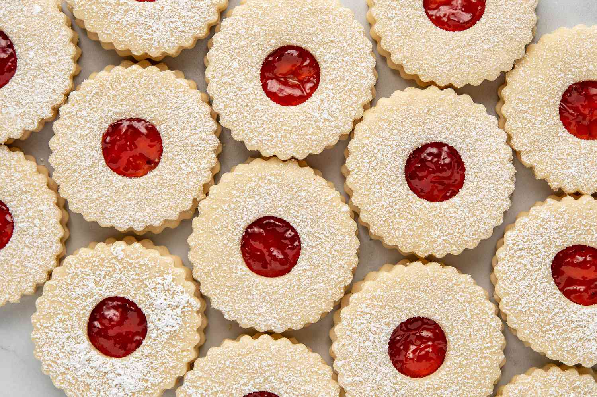

Chocolate Chip Cookies

Our Ultimate Chocolate Chip Cookies are sure to impress cookie connoisseurs everywhere
Ingredients
- 2 ¼ cups Gold Medal™ all-purpose flour
- 1 teaspoon baking soda
- ½ teaspoon salt
- 1 cup butter, softened
- ¾ cup granulated sugar
- ¾ cup packed brown sugar
- 1 egg
- 1 teaspoon vanilla
- 2 cups semisweet chocolate chips
- 1 cup coarsely chopped nuts, if desired
Instructions:
- Heat oven to 375°F. In small bowl, mix flour, baking soda and salt; set aside.
- In large bowl, beat softened butter and sugars with electric mixer on medium speed, or mix with spoon about 1 minute or until fluffy, scraping side of bowl occasionally.
- Beat in egg and vanilla until smooth. Stir in flour mixture just until blended (dough will be stiff). Stir in chocolate chips and nuts.
- Onto ungreased cookie sheets, drop dough by rounded tablespoonfuls 2 inches apart.
- Bake 8 to 10 minutes or until light brown (centers will be soft). Cool 2 minutes; remove from cookie sheet to cooling rack. Cool completely, about 30 minutes. Store covered in airtight container.
Print Recipe
Vanocni Cukrovi

These buttery Czech Christmas cookies are perfect for holidays and special occasions.
Ingredients
- 10 ounces butter, softened
- ¾ cup sugar
- 2 large eggs
- 1 teaspoon vanilla extract
- 4 cups (510 grams) all-purpose flour
- Icing, optional, for garnish
- Jam, optional, for garnish
- Confectioners' sugar, optional, for garnish
Instructions:
- Gather the ingredients. Preheat oven to 350 F.
- In a large bowl with a hand mixer or the bowl of a stand mixer, beat together the butter and sugar until light and fluffy.
- Add eggs and vanilla and mix until completely incorporated.
- Add the flour and mix into a smooth dough. Cover the bowl with plastic wrap and refrigerate the cookie dough for 1 hour.
- Working with half of the dough at a time, roll the chilled dough between pieces of parchment paper to 1/8-inch thick or 3/16-inch thickness, if sandwiching cookies together.
- Remove top piece of parchment paper and cut dough into various shapes. Since the dough doesn't expand much when baking, a mere 1/2-inch space between cookies will be fine. If at any time the dough is getting too soft, refrigerate it for a few minutes and then continue.
- If making sandwiched cookies, cut an even number of plain cookies and an even number of cookies of the same shape that have had a small "window" cut out with a thimble or piping tip so the jam or filling will peek through.
- Remove the scraps and, grabbing the parchment paper by opposite corners, place it on a sheet pan. Bake 8 to 10 minutes. Do not let the cookies brown, they should remain light but still be baked through.
- Cool completely. Repeat with remaining dough. Excess dough can be wrapped and refrigerated.
- If sandwiching cookies together, sprinkle confectioner's sugar over cookies with a "window." Spread jam or filling on "window-less" cookies.
- Place confectioners' sugar cookies on top of the jammed cookies to create sandwiches.
Print Recipe